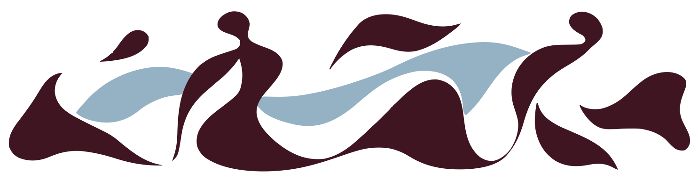
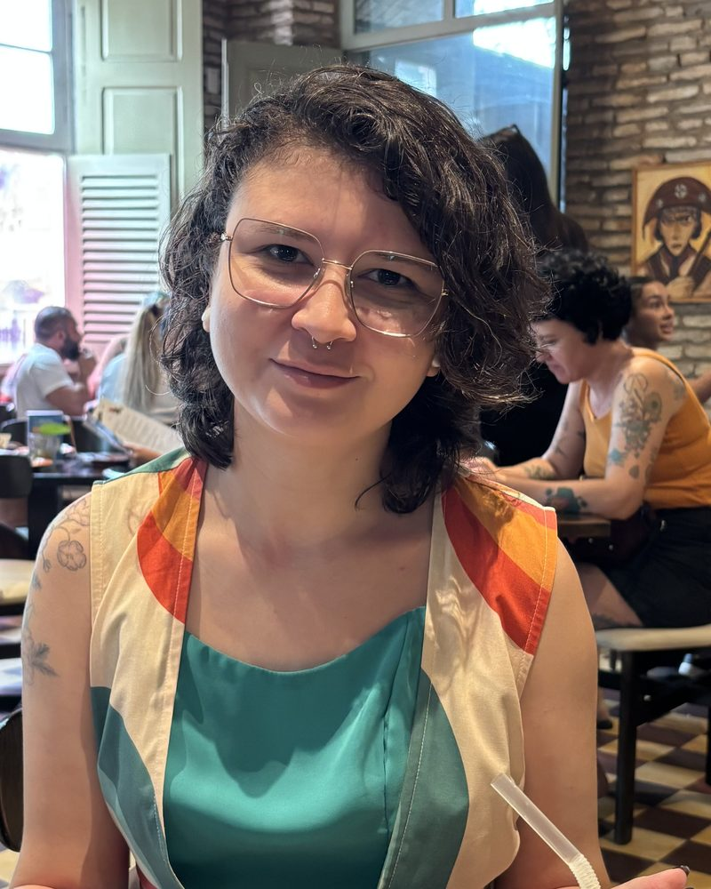

Psicoterapia online para mulheres adultas
Ser agradável. Cuidar de todo mundo. Organizar a vida em torno de um relacionamento. Querer ser mãe. Desejar o que esperam que você deseje. E o que você quer?
Para quem é
Atendo mulheres que desejam pensar sobre si mesmas para além das expectativas que aprenderam a cumprir. Um espaço profissional para conversar sobre sofrimento, relações, escolhas, trabalho, corpo, identidade, autonomia, mudanças e experiências que nem sempre encontram lugar em outros contextos.
Para começar, você não precisa de:
Há muitas maneiras de ser mulher, inclusive aquelas que não encontram lugar no que se espera de uma.

Como eu trabalho
Cada pessoa chega com uma história, um contexto e questões que merecem ser compreendidas na sua singularidade.
O que esperar

foto provisóriaSobre mim · CRP 11/18345
Psicóloga há 5 anos. Minha trajetória profissional passa pela Psicologia Escolar, pelo Plantão Psicológico e por Centros de Atenção Psicossocial (CAPS). Essas experiências me aproximaram de diferentes formas de sofrimento e de realidades que não podem ser compreendidas apenas a partir de características individuais: história de vida, relações, trabalho, acesso a direitos, desigualdades e contexto social também importam.
Atendimento
Individual, só online, para mulheres a partir de 18 anos. Não atendo crianças, adolescentes nem presencialmente.
← arraste para ver todas →
Manual da terapia
Não existe uma maneira perfeita de fazer terapia. Arraste as cartas para o lado: para a esquerda passa, para a direita volta.
Dúvidas frequentes

